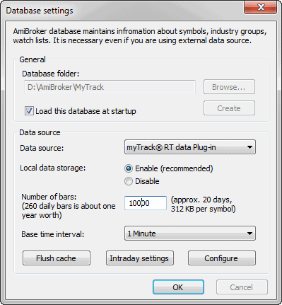
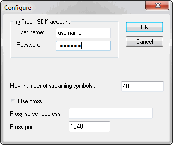

How to set up AmiBroker with myTrack feed (RT version only)
Note: The most recent version of this document can be found at: http://www.amibroker.com/mytrack.html.
Please check this page for updates.
Requirements
IMPORTANT: You must have a myTrack
subscription with the SDK feature enabled.
To make the SDK work, run the myTrack program, click on CHAT, then on Entitlements,
and then on Features, and check the SDK box.
One-time setup
To use AmiBroker with myTrack feed, you will need to perform a one-time
setup described below:
- Run AmiBroker
- Choose File->New database
- Type a new folder name (for example: C:\Program Files\AmiBroker\myTrack) and click Create as shown in the picture below:

- Choose myTrack RT data Plug-in from the Data source combo
and "Enable" from Local data storage
- Click the Configure button to show the plugin configuration dialog as
shown below

Enter your myTrack username and password here. You may also adjust Number
of symbols. This should not exceed your account limit.
Click OK
- Now choose the Base time interval. Note that supported bar intervals are
1 minute and daily (end-of-day).
If you want to have long daily histories AND intraday charts, you should consider
running TWO instances of AmiBroker. One for EOD charts and the second for intraday
charting. Both instances may use myTrack as a data source.
- Click OK.
From now on, your AmiBroker reads quotes directly from myTrack.
To learn how to use AmiBroker in Real Time mode, read this
tutorial article.